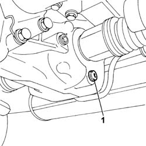
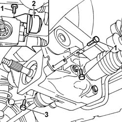
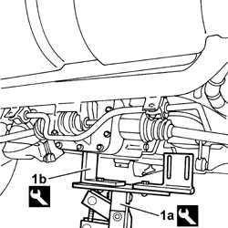
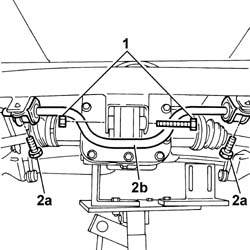
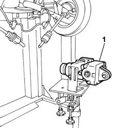
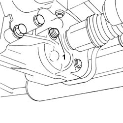

2720C10 DIFFERENCIAL UNIT - R.R.
- Path
- Procedures > 27 AXLE > 2720 REAR AXLE CASING -SEMISHAFT AND DIFFERENTIAL > 2720C REAR DIFFERENTIAL UNIT > 2720C10 DIFFERENCIAL UNIT - R.R.
- Kind
- repair procedure (removal / refitting; the operation number is the code)
- Applies to
- engines: 1.2 8v; all production periods
- Interactive page
- https://sloeber94.github.io/elrnDB-fPnd/en/#/169001643
Applies to: engines: 1.2 8v; all production periods
 Removing
Removing
 Refitting
RefittingOp. 2410A52 VISCOUS JOINT BETWEEN THE TRANSMISSION SHAFTS - R.R. FOR PERMANENT VERSION
Op. 1076B11 FULL EXHAUST PIPING - R.R. FOR FOUR-WHEEL DRIVE MODELS
Arrange a suitable container to collect the differential fluid.
1. Unscrew the plug and drain the rear differential fluid.

Applies to: engines: 1.2 8v; all production periods
1. Unscrew the bolts securing the left rear differential mount.
2. Remove the rear differential left mount.
3. Tighten the bolts securing the right rear differential mount to the rear suspension beam.

Applies to: engines: 1.2 8v; all production periods
1. Position a hydraulic lift wit a plate (1a) and brackets (1b) to support the rear differential and secure to the differential.
Description | Code | Function | |
|---|---|---|---|
1a | Plate | 1.870.856.000 | Support |
Description | Code | Function | |
|---|---|---|---|
1b | Brackets | 1.870.847.000 | Support |

Applies to: engines: 1.2 8v; all production periods
1. Unscrew the bolt securing the rear differential to the rear mount.
2. Unscrew bolts (2a) securing stabiliser bar (2b) to the mounts and release.

Applies to: engines: 1.2 8v; all production periods
Lower the lift and simultaneously release the rear half-axles from the coupling seat on the differential.
1. Remove the rear differential.

Applies to: engines: 1.2 8v; all production periods
Refitting
RemovingRaise the rear differential and at the same time fit the rear half-axles in their seat on the couplings on the differential.
Tighten the bolt securing the differential to the rear mount to torque.
Value daNm | Fastening | Component | Ø | |
|---|---|---|---|---|
- | 10 | Bolt | - | M12 X 1.25 |
Tighten the bolts securing the rear stabiliser bar to the mounts to torque.
Value daNm | Fastening | Component | Ø | |
|---|---|---|---|---|
- | 3.5 | Bolt | - | M8 |
Remove the hydraulic lift and plate and the support brackets.
Description | Code | Function | |
|---|---|---|---|
- | Plate | 1.870.856.000 | Support |
Description | Code | Function | |
|---|---|---|---|
- | Brackets | 1.870.847.000 | Support |
Fit the left differential mount in its seat and tighten the bolts securing it to the differential to torque.
Value daNm | Fastening | Component | Ø | |
|---|---|---|---|---|
- | 8 | Bolt | - | M10 X 1.25 |
Tighten the bolts securing the differential mounts to the rear suspension beam to torque.
Value daNm | Fastening | Component | Ø | |
|---|---|---|---|---|
- | 8 | Bolt | - | M10 X 1.25 |
1. Unscrew the plug and top up the differential fluid level.

Applies to: engines: 1.2 8v; all production periods
Op. 1076B11 FULL EXHAUST PIPING - R.R. FOR FOUR-WHEEL DRIVE MODELS
Op. 2410A52 VISCOUS JOINT BETWEEN THE TRANSMISSION SHAFTS - R.R. FOR PERMANENT VERSION
Topics linked from this page (2)
- 1076B11 FULL EXHAUST PIPING - R.R. FOR FOUR-WHEEL DRIVE MODELS
- 2410A52 VISCOUS JOINT BETWEEN THE TRANSMISSION SHAFTS - R.R. FOR PERMANENT VERSION